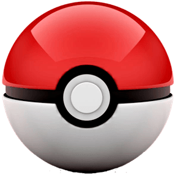
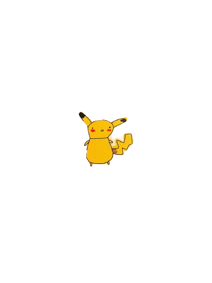
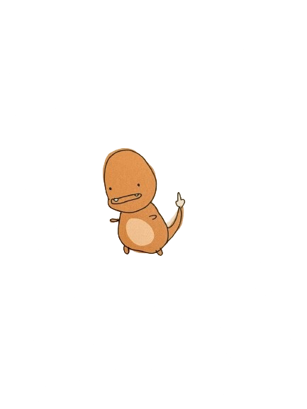
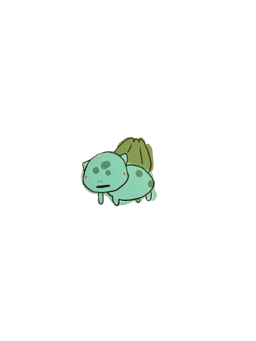

Peekachu

Charman

Boolbiesore
Bienvenido al fascinante y completamente innecesario mundo de los Pokenots, criaturas que desafían la lógica, la biología y, en algunos casos, las leyes de la física.
Los Pokenots son entidades misteriosas que parecen haber sido diseñadas por alguien con mucho tiempo libre y poca supervisión.
Los Pokenots fueron descubiertos cuando alguien tropezó con uno y dijo "¿Qué rayos es esto?".
Buena pregunta. Nadie lo sabe con certeza. Algunos intentan entrenarlos, pero la mayoría simplemente los tolera.
Únete a la comunidad de entrenadores sin criterio. Los Pokenots te esperan… aunque no les importa mucho.